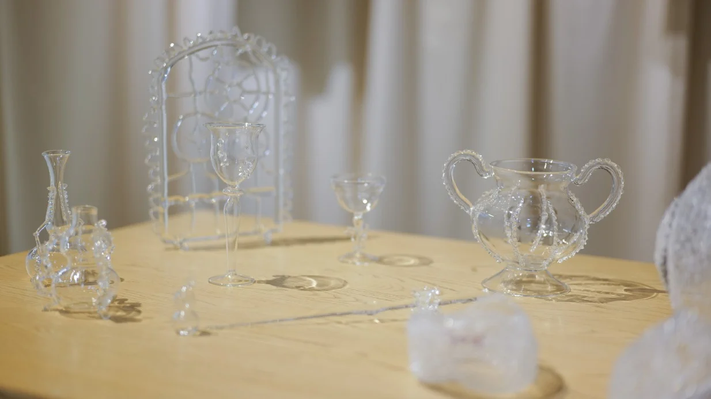
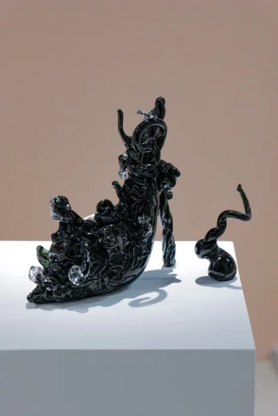

Exhibitions / 2025Spiritual Presence
Where Light Falls
光落之境

The story
A vessel can hold more than matter. It can carry memory, time and light.
The first 2025 exhibition in The Parrot's women-themed biennial considers the vessel as a language rather than a static object: an extension of the body, a carrier of memory and a dwelling place of light. The exhibition continues the foundation's exploration of feminine spirituality.
- Artists & collaborators
- Wang Jiacheng · Long Yan · Chen Nuo · Qian Yiru · Zhou Zizheng · Mao Yuhui · Rafoo Yang
- From the archive
- The Parrot 2026 · pp. 15, 37, 38

